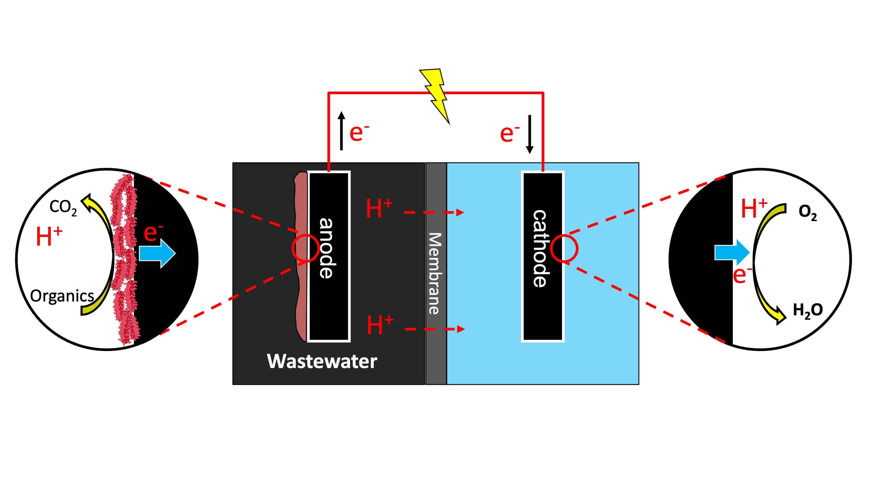
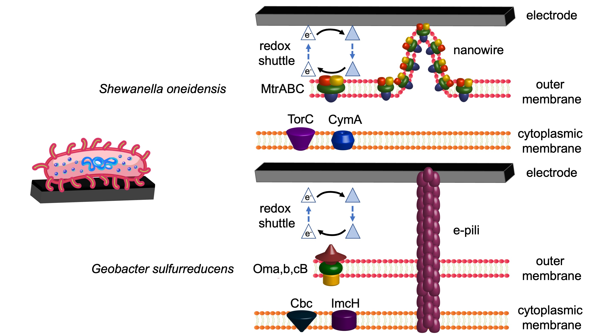

Introduction
Microbial Fuel Cells (MFCs) represent a fascinating intersection of biology and electrochemistry, combining biological catalytic activity with basic anodic electrochemical reactions. In an MFC, electroactive bacteria act as natural catalysts to convert chemical energy from organic matter directly into electrical energy through their metabolic processes. This technology has evolved from a scientific curiosity in the early 20th century to a promising platform for sustainable energy generation and environmental remediation.
The concept of "animal electricity" was conceived and attributed to Potter in 1911, though experiments with frog legs date back to Galvani's work in the 1780s. Since then, MFCs have progressed significantly, with applications ranging from wastewater treatment and biosensing to powering remote sensors and small electronic devices.

From Galvani to Modern MFCs
The history of bioelectrochemical systems is rich with scientific breakthroughs. Luigi Galvani, at the University of Bologna, is considered the first electrochemist and bioelectricity pioneer. In 1780, he discovered that frog muscles could be moved when struck by an electrical spark, leading to the term "animal electricity." Alessandro Volta, Galvani's contemporary, checked these experiments and believed the contractions were due to contact with cable materials to complete the circuit.
In 1838, William Grove described his "gas battery" and is recognized as the father of fuel cells. The term "fuel cell" was coined in 1889 by Charles Langer and Ludwig Mond. Nearly a century after Grove's experiments, Francis Bacon developed the first successful hydrogen-oxygen fuel cell with alkaline electrolyte, and in 1959 NASA achieved a system of fuel cells.
The first report of an actual MFC dates back to the beginning of the 20th century when the English botanist Michael Potter demonstrated that microorganisms could generate a voltage and deliver power. Interest in bioelectrochemical systems was reinvigorated in the 1960s when NASA showed interest in turning organic waste into electricity on space missions.
Key Components and Architecture
A microbial fuel cell consists of three essential components that work in concert to convert biochemical energy into electrical energy:
The Anode: Where Microbial Magic Happens
The anode is the heart of the MFC where electroactive (EA) biofilms colonize the electrode surface. These specialized bacterial communities oxidize organic substrates under anaerobic conditions, releasing electrons that are transferred to the anode electrode. The anode material must possess high electrical conductivity, resistance to corrosion, high mechanical strength, large specific surface area, high porosity, biocompatibility, and low cost.
Common anode materials include various forms of carbon-based electrodes such as carbon cloth, carbon brush, carbon rod, carbon mesh, carbon felt, granular activated carbon (GAC), and graphite plates. Recent research has shown that surface morphology plays a key role, with 3-D structured materials generally outperforming 2-D flat surfaces by providing more attachment sites for bacteria.
The Cathode: Completing the Circuit
The cathode serves as the electron acceptor where the reduction reaction occurs. Oxygen has primarily been used as the oxidant due to its high reduction potential. The oxygen reduction reaction (ORR) represents a significant bottleneck in MFC performance due to high over-potentials and slow kinetics. Various catalysts have been developed, from expensive platinum-based materials to more sustainable platinum-group-metal-free (PGM-free) alternatives based on iron, cobalt, and nitrogen-coordinated carbon structures (M-N-C catalysts).
Proton Exchange Membrane and Separators
The proton exchange membrane (PEM) physically separates the anode and cathode chambers while allowing selective ion transfer. Nafion has been the most commonly used membrane material, though its high cost has driven research into alternatives including ceramic membranes, earthenware, and various biodegradable materials. Membrane-less MFCs have also been developed, though these require careful design to prevent oxygen diffusion to the anode.
Electroactive Microorganisms and Extracellular Electron Transfer
The ability to gain energy by transferring electrons extracellularly is conserved in a vast collection of phylogenetically diverse microorganisms from all three domains of life. Electroactive microbes (EAMs) can be ubiquitously found in diverse environments, especially thriving in anoxic to anaerobic environments such as sediment and sludge where soluble electron acceptors/donors are limited by diffusion.
Model Electroactive Microorganisms
The genera Geobacter and Shewanella, respectively in the phyla Thermodesulfobacteriota and Pseudomonadota, contain the most well-studied EAMs for their exceptional ability to perform extracellular electron transfer (EET). Building thick biofilms and cell appendages allows these microbes to exchange electrons with insoluble materials up to a hundred micrometers away from themselves.
Recently, newly discovered filamentous cable bacteria (also in the phylum Thermodesulfobacteriota) have revolutionized the understanding of EET by extending the conduction distance to the centimeter scale. Cable bacteria construct multicellular long filaments connecting aquatic sediments' sulfidic and oxic zones that are often separated centimeters away.
Mechanisms of Extracellular Electron Transfer
EAMs utilize two primary mechanisms for extracellular electron transfer:
- Membrane-associated EET (MA-EET): Involves transporting electrons across cellular membranes and the periplasmic space, effectively connecting intracellular metabolic activities with the extracellular environment.
- Heterogeneous EET (H-EET): Facilitates the transfer of electrons directly to or from electrode surfaces.
Some EAMs can form thick biofilms on electrodes, enabling long-distance EET (LD-EET) that connects H-EET with MA-EET over multiple cell distances, via redox cofactors (e.g., c-type cytochromes) and conductive cell appendages (e.g., conductive e-pili, cytochrome filaments, nanowires).

How Microbial Fuel Cells Work
At the Anode
Electroactive bacteria colonizing the anode surface oxidize organic substrates under strictly anaerobic conditions, releasing electrons and protons. For example, the complete oxidation of glucose:
C₆H₁₂O₆ + 6H₂O → 6CO₂ + 24H⁺ + 24e⁻
Electrons are transferred to the anode electrode through direct contact, mediators, or nanowires, while protons are released into the solution.
Through the External Circuit
Electrons captured by the anode flow through an external circuit toward the cathode, driven by the potential difference between the two electrodes. This electron flow constitutes the electrical current that can be harvested. Simultaneously, protons migrate through the electrolyte from the anode to the cathode chamber to maintain charge balance.
At the Cathode
At the cathode, the most common reaction is the oxygen reduction reaction (ORR), where electrons combine with protons and oxygen to form water. The direct 4e⁻ transfer (O₂ + 4H⁺ + 4e⁻ → 2H₂O) is preferred for higher efficiency.
Applications of Microbial Fuel Cells
Wastewater Treatment and Energy Recovery
One of the most promising applications of MFCs is in wastewater treatment. Traditional treatment plants are major energy consumers, but MFCs can treat wastewater while producing energy. MFCs can treat various types of wastewater including domestic sewage, brewery wastewater, food processing effluents, and organic-rich industrial waste.
Benthic Microbial Fuel Cells: Powering Ocean Sensors
Benthic microbial fuel cells (BMFCs) are deployed in marine or freshwater sediments. The anode is embedded in the anaerobic sediment layer while the cathode is suspended in the overlying oxygenated water, exploiting the natural redox gradient. Field deployments have demonstrated that BMFCs can operate continuously for extended periods (over 1,000 days in some cases), generating 20–40 mW — sufficient for low-power sensors and data transmission devices in difficult-to-access underwater locations.
Biosensing and Environmental Monitoring
MFCs can function as self-powered biosensors that respond to changes in environmental conditions. The electrical output of an MFC varies with water quality parameters, making them useful for continuous monitoring of biochemical oxygen demand (BOD), toxic compounds, and other pollutants — with no external power required.
Hydrogen Production
When coupled with additional electrical input, MFCs can be configured as Microbial Electrolysis Cells (MECs) to produce hydrogen gas at the cathode. This represents a pathway for sustainable hydrogen production from organic waste.
Performance Factors and Optimization
Biological Factors
- Microbial community composition: The diversity and abundance of electroactive species significantly impact electron transfer efficiency
- Biofilm architecture: Three-dimensional biofilm structure affects mass transport and electron transfer pathways
- Substrate type and concentration: Different organic compounds provide varying energy yields and influence bacterial metabolism
Electrochemical Factors
- Electrode materials: Surface chemistry, morphology, and conductivity affect bacterial attachment and electron transfer
- Cathode catalysts: Catalyst efficiency for oxygen reduction directly impacts overall cell voltage and power output
- Internal resistance: Minimizing ohmic, activation, and concentration resistances improves performance
Operating Conditions
- Temperature: MFCs typically operate best at ambient temperatures (15–45°C)
- pH: Affects both microbial metabolism and electrochemical reaction kinetics
- Ionic strength: Solution conductivity influences internal resistance
Current Challenges and Future Directions
Technical Challenges
- Low power density: Current MFCs generate relatively modest power outputs (typically mW to W range) compared to chemical fuel cells
- Slow startup time: Establishing mature electroactive biofilms can take weeks to months
- Cathode performance limitations: The oxygen reduction reaction remains a bottleneck, with significant overpotentials even with catalysts
- Internal resistance: Ohmic losses, activation overpotentials, and mass transport limitations reduce overall efficiency
Promising Research Directions
- Advanced electrode materials: Nanostructured, high-surface-area electrodes with enhanced biocompatibility and conductivity
- PGM-free catalysts: Iron-, cobalt-, and nitrogen-coordinated carbon catalysts as sustainable alternatives to platinum
- Synthetic biology approaches: Genetic engineering of electroactive bacteria to enhance electron transfer efficiency
- Hybrid systems: Integration of MFCs with other technologies for enhanced performance
Research at Electrobiotechlab
Our laboratory investigates the fundamental mechanisms of electron transfer in electroactive biofilms and develops practical MFC applications for environmental sustainability. Our research focuses on:
- Marine Microbial Fuel Cells: Developing benthic MFCs for long-term ocean monitoring
- Electroactive Biofilm Communities: Investigating the role of electrical conductivity in mixed-species biofilms
- Novel Electrode Materials: Exploring carbon-based and composite materials to enhance bacterial colonization
- System Optimization: Studying the complex interactions between biological, electrochemical, and engineering factors
If you're interested in learning more or potential collaborations, please visit our Research page or contact us.
Key References
- Santoro, C., Arbizzani, C., Erable, B., & Ieropoulos, I. (2017). Microbial fuel cells: From fundamentals to applications. Journal of Power Sources, 356, 225–244. doi:10.1016/j.jpowsour.2017.03.109
- Reimers, C.E., Wolf, M., Alleau, Y., & Li, C. (2022). Benthic microbial fuel cell systems for marine applications. Journal of Power Sources, 522, 231033. doi:10.1016/j.jpowsour.2022.231033
- Li, C. (2026). Anaerobic Digestion for Bioenergy: 8 — Advances in combining anaerobic digestion with other treatment technologies. In A. Hassanein & Y. Gagnon (Eds.), Anaerobic Digestion for Bioenergy (pp. 221–261). Woodhead Publishing. doi:10.1016/b978-0-443-34005-5.00006-3
- New horizons in microbial fuel cell technology: applications, challenges, and prospects — PMC, 2024
- Recent Applications, Challenges, and Future Prospects of Microbial Fuel Cells — PMC, 2024